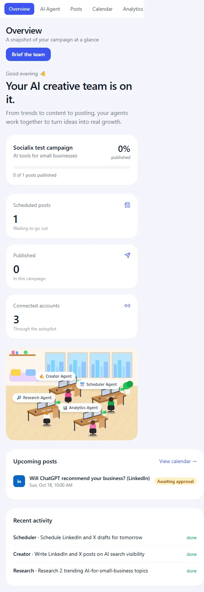

Overview Page
Stats, progress, upcoming posts and recent team activity on one page.
▶ Watch this part (00:48:42)The Overview is the first page the owner sees after signing in. In one glance it should answer: which campaign am I in, how far along
is it, what goes out next, and what has the team been doing? This chapter builds that page. In our app it is a single
server component, src/app/dashboard/page.tsx, that loads everything it
needs in parallel and renders stats, a progress bar, the office picture, upcoming posts and recent agent activity.
What the video does
The plan (48:42)
The presenter splits the page into two halves (48:56). The left half shows statistics: the campaign's progress and how many posts are scheduled for the week. The right half will hold the live office with the agents, which is the next chapter. His slide labels the parts "Campaign Stats (This Week)", "Scheduled Posts List (for this week)" and "Office AI Agent View (Next Chapter)".
Prompt with a mockup (49:20 to 50:06)
He prepared two mockup images: an empty state for a new user ("No posts scheduled yet", "No recent activity") and a filled state with upcoming posts. He starts a new Claude Code conversation, pastes a prompt that asks for the campaign status overview on half of the screen with scheduled posts, a clean empty state and a polished modern UI, and attaches the mockup image as a reference. Only the start of the prompt is visible on screen, so it is not reproduced here.
The result (50:30)
The page shows a greeting ("Good afternoon" with his name), the headline "Your AI Creative Team is on it.", the line "From trends to content to posting, your agents work together to turn ideas into real growth.", a campaign card with "In progress" and "0% Complete", and an "Upcoming posts" card with "No posts scheduled yet" and a Create post button. The right half is still empty. He waits to push: the overview and the office go into one pull request at 59:04.
How our app builds the Overview
src/app/dashboard/page.tsx
import Link from "next/link";
import { redirect } from "next/navigation";
import { and, asc, desc, eq, inArray } from "drizzle-orm";
import { CalendarClock, Link2, Send } from "lucide-react";
import { db, schema } from "@/lib/db";
import type { AgentRole } from "@/lib/db/schema";
import { getCurrentCampaign } from "@/lib/campaign";
import { callSocialTool } from "@/lib/mcp/social";
import { Office } from "@/components/office";
import { Card, PageHeader, PlatformBadge, StatusBadge, formatWhen } from "@/components/ui";
export default async function Overview() {
const campaign = await getCurrentCampaign();
if (!campaign) redirect("/dashboard/campaigns/new");
const [posts, tasks, connections] = await Promise.all([
db.query.posts.findMany({ where: eq(schema.posts.campaignId, campaign.id), orderBy: asc(schema.posts.scheduledAt) }),
db.query.agentTasks.findMany({ where: eq(schema.agentTasks.campaignId, campaign.id), orderBy: desc(schema.agentTasks.createdAt), limit: 6 }),
callSocialTool("list_connections", {}).then((r) => (r.isError ? [] : (JSON.parse(r.text) as { platform: string; status: string }[]))).catch(() => []),
]);
const running = await db.query.agentTasks.findMany({ where: and(eq(schema.agentTasks.campaignId, campaign.id), inArray(schema.agentTasks.status, ["running"])) });
const upcoming = posts.filter((p) => p.scheduledAt && ["awaiting_approval", "queued"].includes(p.status)).slice(0, 5);
const published = posts.filter((p) => p.status === "published").length;
const done = posts.filter((p) => p.status === "published").length;
const progress = posts.length ? Math.round((done / posts.length) * 100) : 0;
const hour = new Date().getHours();
const greeting = hour < 12 ? "Good morning" : hour < 18 ? "Good afternoon" : "Good evening";
const stats = [
{ label: "Scheduled posts", value: upcoming.length, note: upcoming.length ? "Waiting to go out" : "Nothing queued yet", icon: CalendarClock },
{ label: "Published", value: published, note: "In this campaign", icon: Send },
{ label: "Connected accounts", value: connections.filter((c) => c.status === "CONNECTED").length, note: "Through the autopilot", icon: Link2 },
];
return (
<>
<PageHeader title="Overview" subtitle="A snapshot of your campaign at a glance">
<Link href="/dashboard/ai-agent" className="rounded-xl bg-brand-600 px-4 py-2 text-sm font-medium text-white hover:bg-brand-700">
Brief the team
</Link>
</PageHeader>
<div className="grid gap-6 lg:grid-cols-2">
<div className="flex flex-col gap-6">
<div>
<p className="text-sm text-gray-500">{greeting} 👋</p>
<h2 className="mt-1 text-3xl font-semibold tracking-tight md:text-4xl">Your AI creative team is on it.</h2>
<p className="mt-2 text-gray-500">From trends to content to posting, your agents work together to turn ideas into real growth.</p>
</div>
<Card>
<div className="flex items-center justify-between gap-3">
<div>
<p className="font-semibold">{campaign.name}</p>
<p className="text-sm text-gray-500">{campaign.niche}</p>
</div>
<div className="text-right">
<p className="text-2xl font-semibold">{progress}%</p>
<p className="text-xs text-gray-500">published</p>
</div>
</div>
<div className="mt-4 h-2 rounded-full bg-gray-100">
<div className="h-2 rounded-full bg-brand-600" style={{ width: `${progress}%` }} />
</div>
<p className="mt-2 text-xs text-gray-500">
{done} of {posts.length} posts published
</p>
</Card>
<div className="grid gap-4 sm:grid-cols-3">
{stats.map(({ label, value, note, icon: Icon }) => (
<Card key={label}>
<div className="flex items-center justify-between text-sm text-gray-500">
{label}
<Icon size={16} className="text-brand-600" />
</div>
<p className="mt-2 text-3xl font-semibold">{value}</p>
<p className="text-xs text-gray-400">{note}</p>
</Card>
))}
</div>
</div>
<Office working={running.map((t) => t.agent as AgentRole)} className="aspect-[10/7]" />
</div>
<div className="mt-6 grid gap-6 lg:grid-cols-2">
<Card>
<div className="mb-3 flex items-center justify-between">
<h3 className="font-semibold">Upcoming posts</h3>
<Link href="/dashboard/calendar" className="text-sm text-brand-600">
View calendar →
</Link>
</div>
{upcoming.length === 0 ? (
<p className="py-8 text-center text-sm text-gray-400">No posts scheduled yet. Ask the Master Agent to plan some.</p>
) : (
<ul className="divide-y divide-gray-100">
{upcoming.map((p) => (
<li key={p.id} className="flex items-center gap-3 py-3">
<PlatformBadge platform={p.platform} />
<div className="min-w-0 flex-1">
<p className="truncate text-sm font-medium">{p.title}</p>
<p className="text-xs text-gray-500">{formatWhen(p.scheduledAt)}</p>
</div>
<StatusBadge status={p.status} />
</li>
))}
</ul>
)}
</Card>
<Card>
<h3 className="mb-3 font-semibold">Recent activity</h3>
{tasks.length === 0 ? (
<p className="py-8 text-center text-sm text-gray-400">As your AI agents research, write and publish, their updates will appear here.</p>
) : (
<ul className="divide-y divide-gray-100">
{tasks.map((t) => (
<li key={t.id} className="flex items-center justify-between gap-3 py-3 text-sm">
<span className="min-w-0 truncate">
<span className="font-medium capitalize">{t.agent}</span> · {t.title}
</span>
<span className={`text-xs ${t.status === "done" ? "text-emerald-600" : t.status === "failed" ? "text-red-600" : "text-brand-600"}`}>{t.status}</span>
</li>
))}
</ul>
)}
</Card>
</div>
</>
);
}Line by line
| Line(s) | Code | What it does & why |
|---|---|---|
| 1–2 | Link, redirect | Links to other pages, and the redirect used when there is no campaign. |
| 3 | import { and, asc, desc, eq, inArray } from "drizzle-orm"; | Drizzle's query helpers: combine conditions (and), sort up or down (asc, desc), "equals" (eq) and "is one of" (inArray). |
| 4 | import { CalendarClock, Link2, Send } from "lucide-react"; | The three icons on the stat cards. |
| 5–7 | db, schema, AgentRole, getCurrentCampaign | The database, the agent type, and the open campaign (step 07). |
| 8 | import { callSocialTool } from "@/lib/mcp/social"; | Calls a tool on our publishing MCP server (step 18). Here it asks which social accounts are connected in the autopilot. |
| 9–10 | Office, Card, PageHeader, PlatformBadge, StatusBadge, formatWhen | The office picture (step 10) and the shared UI pieces from ui.tsx (previous page). |
| 12 | export default async function Overview() | The page for /dashboard. async because it awaits the database. It sits inside the dashboard layout, so sign-in is already checked. |
| 13–14 | const campaign = await getCurrentCampaign(); if (!campaign) redirect("/dashboard/campaigns/new"); | No campaign yet: go to the form. This is the rule from the video's campaign prompt ("if not, redirect them to the Create Campaign page"). After this line TypeScript knows campaign is not null, because redirect never returns. |
| 16–20 | const [posts, tasks, connections] = await Promise.all([ … ]); | Three loads at the same time: all posts of the campaign sorted by scheduled time; the 6 newest agent tasks; and the connected accounts. |
| 19 | callSocialTool("list_connections", {}).then(…).catch(() => []) | The tool answers JSON text. If it reports an error (r.isError) or the call fails completely (.catch), the list is empty instead of crashing the page. The Overview still works when the autopilot is not reachable; it just shows 0 connected accounts. |
| 21 | const running = await db.query.agentTasks.findMany({ where: and(…, inArray(…status, ["running"])) }); | Tasks that are running right now, for this campaign. Their agents are drawn "working" in the office. |
| 23 | const upcoming = posts.filter((p) => p.scheduledAt && ["awaiting_approval", "queued"].includes(p.status)).slice(0, 5); | Posts that have a time and are still to go out (waiting for approval, or queued in the autopilot). The list is already sorted by time, so the first 5 are the next 5. |
| 24–26 | published, done, progress | Number of published posts, and progress as a whole percentage of all posts. posts.length ? … : 0 avoids dividing by zero for a new campaign. (published and done are computed the same way; one would be enough, but it does no harm.) |
| 27–28 | const hour = new Date().getHours(); const greeting = hour < 12 ? "Good morning" : … | Morning before 12, afternoon before 18, evening after. This runs on the server, so it uses the server's clock, which is the owner's own PC here. |
| 30–34 | const stats = [ { label, value, note, icon }, … ]; | The three stat cards as data: scheduled posts (with a note that changes when there are none), published posts, and connected accounts (only status CONNECTED counts). Rendering them from a list keeps the JSX below short. |
| 38–42 | <PageHeader title="Overview" subtitle="…"> <Link href="/dashboard/ai-agent" …>Brief the team</Link> | Title, subtitle and one button that opens the AI Agent page, where you give the team its instructions. |
| 44 | <div className="grid gap-6 lg:grid-cols-2"> | One column on small screens, two equal columns from lg (1024px): the video's "two halves". |
| 45–50 | Greeting block | The greeting, the big headline (larger from md up, tracking-tight for a compact look) and the grey sentence about the team. |
| 51–68 | Campaign card | Name and niche on the left, the percentage on the right, a grey track with a blue bar inside, and "X of Y posts published". The bar width is set with an inline style, because Tailwind cannot create a class for a number only known at run time. |
| 69–80 | <div className="grid gap-4 sm:grid-cols-3"> and stats.map(…) | Three cards side by side from sm (640px), stacked below that. icon: Icon renames the field so it can be used as a component tag. |
| 82 | <Office working={running.map((t) => t.agent as AgentRole)} className="aspect-[10/7]" /> | The right half: the office, told which agents are working. Built in the next chapter. |
| 85–109 | Upcoming posts card | Header with a link to the calendar. If the list is empty, a friendly hint to ask the Master Agent. Otherwise one row per post: platform badge, title (cut with "…" if long), date from formatWhen, status badge. divide-y draws thin lines between rows. |
| 110–126 | Recent activity card | The 6 newest tasks: agent name (capitalize turns "research" into "Research"), task title, and the status coloured green for done, red for failed and blue otherwise. Empty: a sentence explaining what will appear here. |
New to Promise.all? Why the page waits for three things at once
Each database query or MCP call takes some milliseconds. Written as three separate await lines, the second starts only
when the first is done, so the times add up. Promise.all([a, b, c]) starts all three at once and waits until every one has
finished, so the page waits only as long as the slowest. It returns the results in the same order, which is why
const [posts, tasks, connections] = … works.
One catch: if any of them fails, the whole Promise.all fails. That is why the MCP call has its own .catch(() => []).
upcoming list also gives the "Scheduled posts" number, so the card and the list always agree.
New to responsive breakpoints? How one page fits a phone and a monitor
Tailwind classes without a prefix apply to every screen size. A prefix such as sm: (640px), md: (768px) or
lg: (1024px) means "from this width up". So grid gap-6 lg:grid-cols-2 is a single column on phones and tablets and two
columns on a laptop. You design for the small screen first, then add what changes on bigger ones.
On this page three breakpoints work together: the stat cards go side by side from sm, the sidebar appears from md
(previous page), and the two halves appear from lg.

MobileNav row, and the two columns stack: stats, office, upcoming posts, recent activity.- Connected accounts shows 0. The MCP call failed and the fallback returned an empty list. Check that the autopilot's database is running (
docker start wsa-pg) and runpnpm mcp:check(step 18). - Always sent back to the campaign form. If creating a campaign fails silently, every visit to
/dashboardsends you back to the form. Check the server terminal for a database error. - A scheduled post missing from "Upcoming". Only awaiting approval and queued posts with a time are listed. A draft without a time, or a published post, is not.
- Using a Tailwind class for the bar width. A class like
w-[42%]built from a variable at run time is never generated by Tailwind, so the bar stays empty. Use an inlinestyle, as line 63 does. - Wrong greeting. The greeting uses the server's clock. If you deploy the app to a server in another time zone, it greets by that zone's time.
- Stats: the video's plan shows stats "this week". Ours shows totals for the campaign: posts still to go out, published posts, and accounts connected in the autopilot. We store no views, likes or follower numbers.
- Progress: both show a percentage and "X of Y posts published"; ours is published posts divided by all posts.
- Activity: the video's mockup has a "Recent Activity" card; ours lists the newest agent tasks from the
agent_taskstable. - Button: the video's header has Create post. Our Overview has Brief the team, which opens the AI Agent page, because in our app posts are usually written by the agents.
- Office: in the video the right half stays empty until the next chapter; ours already renders the SVG office with the working agents.
- The Overview is one server component that redirects to the campaign form when there is no campaign.
- It loads posts, recent tasks and connected accounts in parallel with
Promise.all; the MCP call falls back to an empty list. - "Upcoming" means scheduled and still to go out (awaiting approval or queued), the next 5 by time.
- Progress is published posts out of all posts, guarded against dividing by zero.
- The layout is two columns on wide screens (stats and office) and a single stacked column on phones.